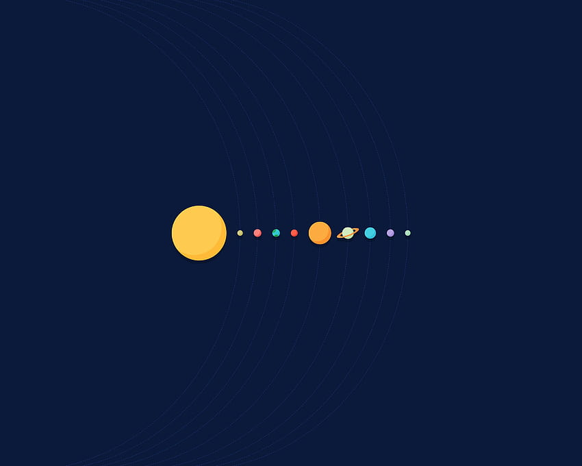

Tema 1
En este tema no encontramos ninguna tarea por hacer, lo que si encontramos es una introducción a la asignatura en la que se nos da a conocer las características generales de los lenguajes de marcas y sus usos, y las diferentes herramientas para trabajar con estos. También creamos nuestro repositorio:
Tema 2
Este tema se caracteriza por tener como objetivo conocer la sintaxis de HTML, identificar los elementos en un documento HTML y conocer tanto el concepto de hyperdato como la estructura de un sitio web. Para ello hicimos la siguiente tarea:

Mas tarde le añadimos una hoja de estilos css
Tema 3
Este tema se centra principalmente en conocer la estructura de un documento HTML, con el objetivo de identificar y conocer los elementos fundamentales del documento, estructurar el contenido de una página, y analizarla en el navegador. Para ello hicimos la siguiente tarea:
Tema 4
Este tema se centra en expandir nuestro repertorio de etiquetas de HTML, como puedan ser, el formateo de texto, los comentarios, enlaces, las listas, imagenes y contenido incrustado, también empezaremos a usar w3school para buscar documentación. Hicimos la siguinte tarea:

Tema 5
En este tema nos pondremos con la introduccion a los estilos css mediante el uso y creación de las tablas y formularios HTML. Para ello realizamos en clase los siguientes ejercicios:

Tema 6
Este tema se centra en conocer la evolución de HTML a lo largo del timepo, y conocer e implementar tanto la web semántica como los diferentes elementos multimedia de los cuales podemos hacer uso. Para ello hicimos entre todos en clase el siguiente ejercicio: